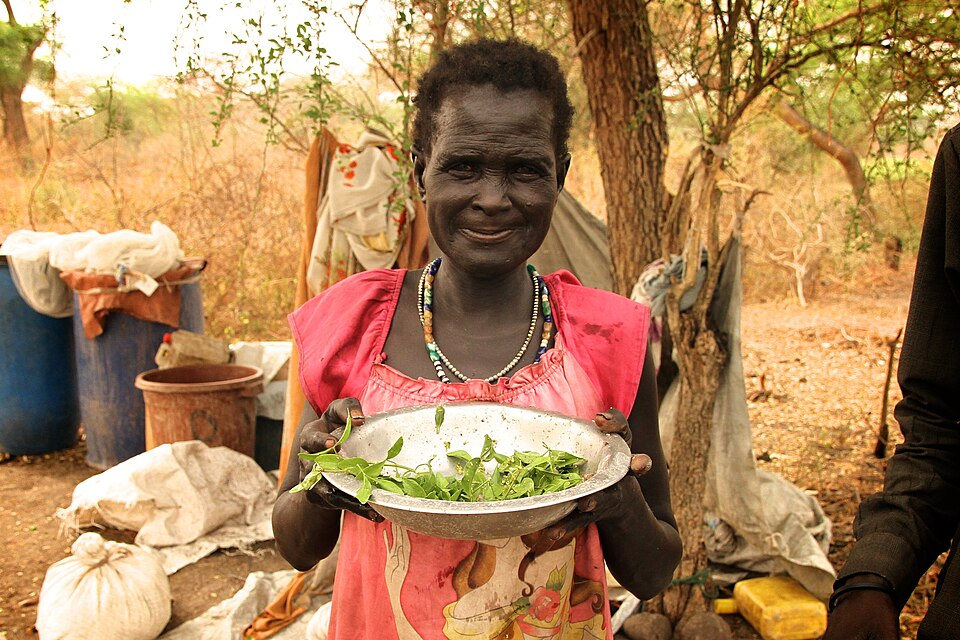

세계시민 미니북 2·3·5면 사전 조사 자료
사용법: 이 자료를 출력해서 준비물(사전 조사 자료) 로 가져가세요. 미니북에는 핵심 숫자만 옮겨 적고 끝에
(출처: FAO, 2026) 처럼 짧게 출처를 붙이면 됩니다.
2026년 11월 기준 최신 공식 자료로 정리했습니다. 파란 상자는 미니북에 쓸 수 있는 문장 예시 입니다.
2면 · 기아 문제 설명 / 발생 원인 / 구체적 사례
① 세계 기아 현황 (가장 최신 공식 통계)
2025년 약 6억 4,500만 명 굶주림 (세계 인구의 7.8%, 약 13명 중 1명)
3년 연속 조금씩 줄고 있지만, 아프리카는 인구의 20.0% (5명 중 1명)가 굶주린다.
이대로라면 2030년에도 5억 1천만~5억 2천만 명 이 굶주릴 것으로 예상 → 지속가능발전목표 2번 '기아 종식' 달성이 어렵다.
미니북 문장 예: 2025년 세계 인구의 약 13명 중 1명, 6억 4,500만 명이 굶주렸다. (출처: FAO 외, 2026)
② 발생 원인을 뒷받침하는 자료
분쟁: 심각한 식량 위기를 겪는 사람의 70%가 분쟁·취약 국가 에 산다. 2025년에는 가자지구와 수단 에서 동시에 기근이 확인되었다.
식량 낭비: 2022년 가정·식당·상점에서 버려진 음식은 10억 5천만 톤 으로, 소비자가 구할 수 있는 식량의 약 19%(5분의 1) 이다. 이 중 60%가 가정에서 버려졌다.
여기에 수확 뒤 상점에 오기 전까지 약 13% 가 손실된다. → 둘을 합치면 약 3분의 1 이 먹히지 못하고 사라진다.
미니북 문장 예: 소비자에게 간 음식의 약 5분의 1이 버려진다. (출처: UNEP, 2024)
③ 구체적 사례 자료
사례 확인된 내용 러시아–우크라이나 전쟁 2022년 2월 침공 직후 국제 곡물 가격이 급등했고, 3월에는 밀 선물 가격이 역대 최고치 를 기록했다. 27개 나라가 61건의 식량 수출 규제를 하면서 가격이 더 올랐다(인도 밀 수출 금지 등). 수단 내전 2024년 8월 국제 식량 위기 분류(IPC)가 북다르푸르의 잠잠 난민촌에 '기근'(가장 심각한 5단계) 을 판정했다. 12월에는 아부 샤우크·알살람 난민촌 등으로 기근이 퍼졌다.
④ 사진·그래프 자료 (2면에 붙이기)

분쟁을 피해 온 사람들이 나뭇잎과 풀로 끼니를 잇는 모습 (남수단 랑키엔)
음식은 어디서 버려질까? (2022년)
버려진 음식 10억 5천만 톤 중
가정 60%
식당 28%
상점 12%
→ 가장 많이 버리는 곳은 바로 우리 집!
→ 1인당 1년에 약 132kg을 버린다.
자료: UNEP 음식물 쓰레기 지수 보고서 2024를 바탕으로 직접 그림
직접 만든 그래프라 출처만 적으면 자유롭게 쓸 수 있습니다.
3면 · 기아가 세계에 미치는 영향 (개인적 · 사회적 · 국제적)
① 개인적 차원 — 어린이의 성장과 건강
5세 미만 어린이 약 1억 5천만 명이 발육 부진 (2024년)
오랫동안 제대로 먹지 못해 키가 나이에 비해 많이 작은 상태다. 몸이 갑자기 마르는 급성 영양실조 어린이도 최소 4,300만 명 이다.
두뇌 발달이 늦어지고 병에 잘 걸려, 공부와 일할 능력에까지 평생 영향을 준다.
② 개인적 차원 — 우리 생활에도 영향 (우리나라 곡물 자급률)
우리나라 곡물 자급률 (2023 양곡연도) — 우리가 먹는 곡물 중 직접 기른 비율
곡물 전체 22.2%
콩 9.3%
밀 1.1%
옥수수 0.8%
빵·라면의 원료인 밀은 99% 가까이 수입 한다. 그래서 전쟁이나 가뭄으로 세계 곡물값이 오르면 우리 밥상 물가도 함께 오른다.
실제로 2022년 우크라이나 전쟁 뒤 밀가루·라면·과자 값이 잇달아 올랐다.
출처: 한국농촌경제연구원(KREI) 분석(2023 양곡연도)을 인용한 뉴스토마토 보도, "밥상 흔드는 '식량안보'…가격폭등 넘어 '물량차질'" ·
newstomato.com
참고: 계산 기준에 따라 2023~2025년 평균 19.2%라는 전망 자료도 있다 (파이낸셜뉴스, 2026.7.2) ·
fnnews.com
농림축산식품부 설명자료(2020년 곡물자급률 20.2%) ·
mafra.go.kr 미니북 문장 예: 우리나라는 곡물 자급률이 약 20%로, 곡물 대부분을 수입해서 세계 곡물값이 오르면 라면·빵 값도 오른다. (출처: KREI)
③ 사회적 · 국제적 차원 — 굶주림과 분쟁의 악순환
분쟁 지역 사람들은 안정된 지역보다 영양 부족을 겪을 가능성이 최대 3배 높다.
식량 불안이 심한 분쟁 후 국가는, 굶주림을 해결하지 않으면 10년 안에 다시 분쟁이 일어날 가능성이 40% 더 높다 .
2018년 유엔 안전보장이사회는 결의 2417호 로 민간인을 굶주리게 하는 것을 전쟁 수단으로 쓰는 것을 규탄했다.
2025년 3억 1,800만 명 이 극심한 굶주림을 겪었다. 코로나19 이전의 두 배가 넘는다. 먹을 것을 찾아 고향을 떠나는 사람이 늘면 주변 나라에도 부담이 된다.
미니북 문장 예: 굶주림은 분쟁을 낳고 분쟁은 다시 굶주림을 낳는다. 분쟁 지역 사람은 영양 부족 위험이 최대 3배 높다. (출처: WFP)
5면 · 유엔 세계식량계획(WFP) 조사
이름 유엔 세계식량계획 (WFP, World Food Programme) 종류 · 설립 국제연합(UN) 산하 국제기구 · 1961년 설립 · 본부 이탈리아 로마 설립 목적 긴급 상황에서 굶주리는 사람의 생명을 구하고, 스스로 식량을 마련할 힘을 길러 굶주림을 없애는 것(Zero Hunger)
① 2025년 주요 활동 (최신)
2025년 전 세계에서 1억 명 넘는 사람 에게 식량을 지원했다. 2026년 목표는 1억 1천만 명이다.
수단: 매달 400만 명 이상을 지원했고, 9개 지역에서 기근 상황을 되돌렸다. (→ 2면 수단 사례와 연결)가자지구: 100만 명 넘는 사람에게 긴급 식량 꾸러미를 전달했다.학교 급식: 위기를 겪는 나라에서 해마다 2,000만 명 넘는 어린이 에게 학교 급식을 제공한다.재난 지원: 방글라데시·나이지리아 홍수, 허리케인 멜리사(자메이카·쿠바·아이티) 피해 지역에서 50만 명 이상을 도왔다.
출처: WFP USA, "In 2025, WFP Continued to Save Lives and Support Millions Affected by Humanitarian Crises", 2026.1.27 ·
wfpusa.org
② 2020년 노벨 평화상
노르웨이 노벨위원회는 WFP가 굶주림과 싸우고, 분쟁 지역의 평화 여건을 개선하며, 굶주림이 전쟁과 분쟁의 무기로 쓰이는 것을 막으려 노력한 점 을 인정해 2020년 노벨 평화상을 수여했다.
출처: UN News, "UN World Food Programme wins 2020 Nobel Peace Prize, as hunger mounts", 2020.10.9 ·
news.un.org 미니북 문장 예: 굶주림이 전쟁의 무기로 쓰이는 것을 막은 공로로 2020년 노벨 평화상을 받았다.
③ 한국과 WFP — 도움받던 나라에서 돕는 나라로
WFP와 한국의 인연은 전쟁의 상처가 남아 있던 1964년 에 시작되었고, WFP는 그 뒤 약 20년 동안 한국에 식량을 지원했다.
지금 한국은 WFP의 주요 공여국이다. 2018년부터 해마다 우리 쌀 5만 톤 을 예멘·에티오피아·케냐·우간다 등에 보냈고, 최근에는 15만 톤을 17개 나라 에 지원하기로 했다.
출처: WFP 한국사무소, 사무총장 영상 메시지(2020 농업인의 날) ·
ko.wfp.org
농림축산식품부 보도자료, "세계 식량위기 해소를 위해 역대 최대규모인 15만 톤의 쌀을 17개국에 원조" ·
mafra.go.kr
④ 사진 자료 (5면에 붙이기)
수단 포트수단에서 WFP 밀가루 포대를 트럭에서 창고로 옮기는 모습 (2024.2)
WFP 로고